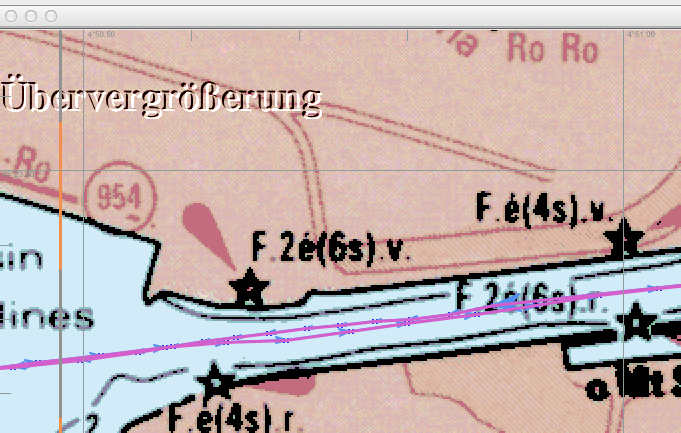
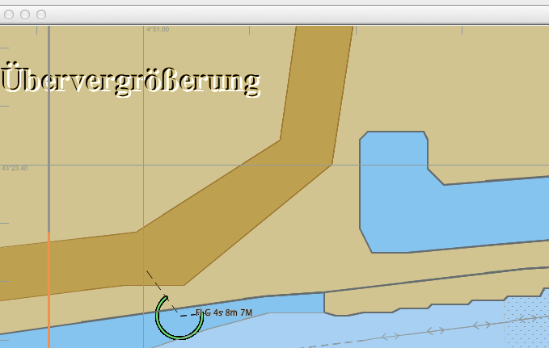

Zoom Ein & Aus
Mit diesen Knöpfen kann die aktuell angezeigte Karte ein- oder ausgezoomt werden.
Zoomt die Karte ein für weitere Details.
Zoomt die Karte aus für eine größere Fläche.
Alternativ kann mit den + und - Tasten Ihrer Tastatur ein- und ausgezoomt werden. Haben Sie eine Maus mit Scroll-Rad, kann dieses auch dazu verwendet werden.
Zum Zoomen in kleineren Schritten verwenden Sie
Übervergrößerung


Wird zu viel vergrößert, erscheint in der oberen linken Ecke "Übervergrößerung". Damit wird die zu Grunde liegende Karte in einem Maßstab verwendet, für den sie nicht gemacht wurde. Man sieht keine weiteren neuen Informationen und die Situation wird gefährlich! Bei einer Raster-Karte kommt es zu groben Pixeln (Bild oben) und bei einer Vector-Karte fällt es sonst nicht auf, daher ist die Warnung nützlich. Es sollte daher sofort wieder verkleinert werden, wenn die Warnung erscheint.